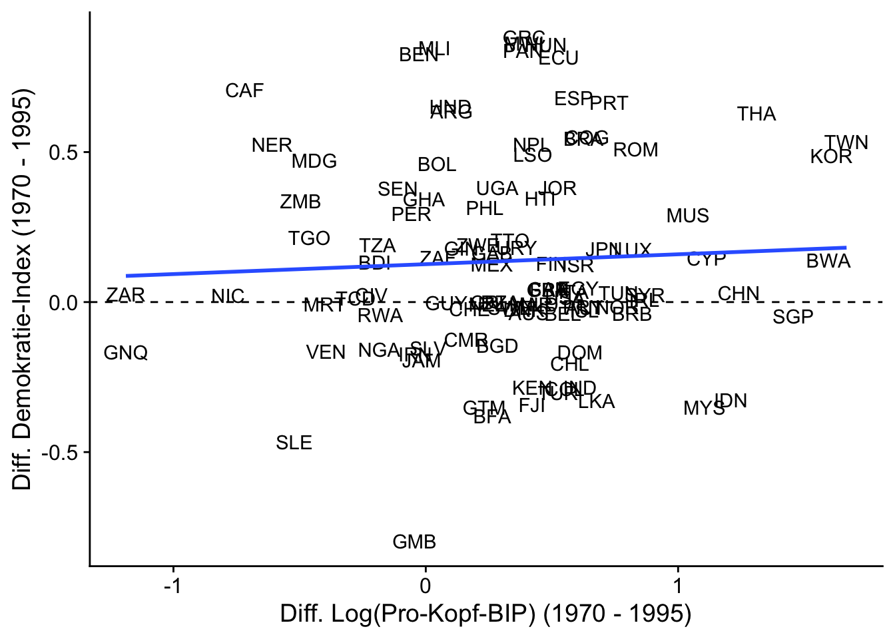
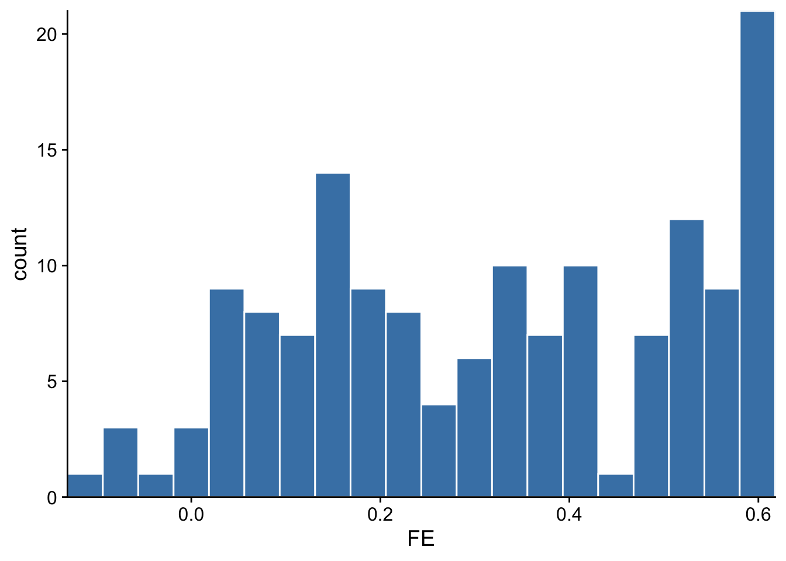

7 Panel-Daten
Das Ziel dieses Kapitels ist es, ein Verständnis für die Vor- und Nachteile von Panel-Daten-Modellen für die Schätzung kausaler Effekte zu vermitteln. Im Fokus steht dabei, Backdoor-Pfade durch unbeobachtbare Heterogenitäten, die in Querschnittsdaten oft schwer zu adressieren sind, mit Regression zu schließen. Die betrachteten Identifikationsstrategien basieren auf der zusätzlichen zeitlichen Dimension \(T>1\) in den Daten. Diese zusätzlichen Informationen ermöglicht neben der konsistenten Schätzung kausaler Effekte oftmals auch eine präzisere statistische Inferenz als für \(T=1\).
7.1 Pooled Regression und unbeobachtbare Heterogenität
Ein Panel-Datensatz enthält Beobachtungen von \(n\) Einheiten für (bis zu) \(T\) Zeitpunkte, wobei \(t=1,\dots,T\). Betrachte das Panel-Modell
\[\begin{align} Y_{it} = \beta_0 + \beta_1 B_{it} + \beta_2 X_i + \beta_3 U_i + \epsilon_{it},\label{eq:unobshetmodel} \end{align}\]wobei \(U_i\) unbeobachtete und \(X_i\) beobachtete, zeitlich-invariante Heterogenitäten zwischen den Beobachtungseinheiten \(i=1,\dots,n\) sind. Wie zuvor ist \(B_{it}\) die Behandlungsvariable und \(\beta_1\) der (für alle Beobachtungseinheiten identische) interessierende kausale Effekt einer Veränderung von \(B_{it}\) auf \(Y_{it}\).
Angenommen wir beobachten \(Y_{it}\) und \(B_{it}\) für \(T=1\), also für eine Periode. Bei Korrelation zwischen den unbeobachtbaren zeit-invarianten Effekten \(U_i\) und der Behandlungsvariable \(B_{it}\) kann der kausale Effekt \(\beta_1\) nicht identifiziert werden. Diese Situation ist in Abbildung 7.1 dargestellt.
Abbildung 7.1 zeigt Backdoors durch die \(U_i\), die wir mit einer “naiven” KQ-Schätzung der fehlspezifizierten Regression \[\begin{align} Y_{it} = \beta_0 + \beta_1 B_{it} + \beta_2 X_i + \varepsilon_{it},\quad t=1,\label{eq:femodelfail} \end{align}\] mit \(\varepsilon_{it} = U_i + \epsilon_{it}\) nicht schließen können.1
Wir betrachten nun eine Generalisierung von Abbildung 7.1 für \(T=2\) Perioden, dargestellt in Abbildung 7.2.
Der in Abbildung 7.2 gezeigte Zusammenhang führt (idealerweise) zwar zu einer Verdoppelung des Beobachtungsumfangs, jedoch besteht weiterhin das in Abbildung 7.1 gezeigte Endogenitätsproblem, falls die Regression \(\eqref{eq:femodelfail}\) nun anhand einer Zusammenlegung (Pooling) aller Beobachtungen für \(t\in\{1,2\}\) geschätzt wird:2 Die unbeobachteten zeit-invarianten Einflüsse \(U_i\) verursachen auch für Periode \(t=2\) Backdoor-Pfade.
In diesem Kapitel betrachten wir Panel-Verfahren, welche den kausalen Effekt in Abbildung 7.2 und Verallgemeinerungen hiervon schätzen können. Bevor wir diese Methoden betrachten, veranschaulichen wir die verzerrte Schätzung eines Behandlungseffekts mit Pooled Regression in Modell \(\eqref{eq:femodelfail}\) bei unbeobachtbaren Heterogenitäten für einen simulierten Datensatz paneldata.csv. Der Datensatz enthält Beobachtungen von \(n=12\) Einheiten zu \(T=8\) Perioden. Alle Einheiten weisen unbeobachtbare zeit-invariante Heterogenitäten auf, die mit \(B_{it}\) korellieren. Der wahre Behandlungseffekt beträgt \(\beta_1 = -1\).3
Wir lesen zunächst den Datensatz ein und selektieren die benötigten Variablen.
# Datensatz 'paneldata.csv' einlesen
paneldata <- read_csv("datasets/paneldata.csv") %>%
select(X, Y, ID, time, col)# Panel-Dimensionen bestimmen
paneldata %>%
summarise(
N = unique(ID) %>% length(),
T = unique(time) %>% length()
)# A tibble: 1 × 2
N T
<int> <int>
1 12 8Mit der Funktion plm::is.pbalanced() überprüfen wir, ob im Panel-Datensatz für alle beobachteten Einheiten die gleiche Anzahl an Beobachtungsperioden vorliegt (balanced panel).4
library(plm)
# Datensatz balanced?
is.pbalanced(
x = paneldata,
index = c("ID", "time")
)[1] TRUEZunächst schätzen wir eine Pooled Regression für die ersten beiden Zeitperioden, basierend auf einem entsprechend gefilterten Datensatz.5
# Subsetting der Daten für 2 Perioden (t = {1, 2})
paneldata_T2 <- paneldata %>%
filter(
dplyr::between(time, 1, 2)
)Für die Schätzung von \(\eqref{eq:femodelfail}\) nutzen wir fixest::feols().
library(fixest)
# Naive KQ-Schätzung für t = {1, 2}
panel_KQ <- feols(
fml = Y ~ X,
data = paneldata_T2
)
# Statistische Zusammenfassung
summary(panel_KQ)OLS estimation, Dep. Var.: Y
Observations: 24
Standard-errors: IID
Estimate Std. Error t value Pr(>|t|)
(Intercept) -2.50547 1.481150 -1.69157 1.0485e-01
X 3.80692 0.194202 19.60295 2.0252e-15 ***
---
Signif. codes: 0 '***' 0.001 '**' 0.01 '*' 0.05 '.' 0.1 ' ' 1
RMSE: 3.28785 Adj. R2: 0.943388Die Schätzung von \(\beta_1\) ist 3.81 und weist auf eine deutliche Verzerrung hin. Wir illustrieren die Problematik in Abbildung 7.3, in dem wir die für die Regression verwendeten Daten (Kreise) sowie die Beobachtungen späterer Perioden (Kreuze) nach Gruppenzugehörigkeit einfärben und die Schätzung der Pooled Regression abtragen.
library(cowplot)
# Plot: Naiver KQ-Schätzer für t = 1, 2
ggplot(
mapping = aes(x = X, y = Y)
) +
geom_point(
data = paneldata %>%
filter(time > 2),
mapping = aes(color = col),
pch = 3,
show.legend = F
) +
geom_point(
data = paneldata %>%
filter(time %in% 1:2),
mapping = aes(color = col),
show.legend = F
) +
# Naive KQ-Schätzung für t = 1, 2
geom_smooth(
data = paneldata %>%
filter(time %in% 1),
method = "lm",
se = F,
col = "black"
) +
scale_color_identity() +
theme_cowplot()
paneldaten.csv – Pooled Regression für t = 1, 2
Abbildung 7.3 zeigt einen negativen Verlauf des Zusammenhangs zwischen X und Y anhand der Variation der Beobachtungen innerhalb der farblich gekennzeichneten Gruppen. Dieser negative Zusammenhang kann aufgrund der Endogenität von \(X\) nicht erfasst werden.
Eine Erweiturung der Regression auf sämtliche Perioden (Pooling aller \(n\times T = 12 \times 8 = 96\) Beobachtungen) erhöht lediglich die Präzision der Schätzung (geringerer Standardfehler von \(\widehat{\beta}_1\)), nicht aber die Endogenität, vgl. Abbildung 7.4.
# Naive KQ-Schätzung für t = 1,...,8
panel_KQ <- feols(
fml = Y ~ X,
data = paneldata
)
# Statistische Zusammenfassung
summary(panel_KQ)OLS estimation, Dep. Var.: Y
Observations: 96
Standard-errors: IID
Estimate Std. Error t value Pr(>|t|)
(Intercept) -1.45318 1.008859 -1.44042 0.15307
X 3.76470 0.134364 28.01868 < 2.2e-16 ***
---
Signif. codes: 0 '***' 0.001 '**' 0.01 '*' 0.05 '.' 0.1 ' ' 1
RMSE: 4.63461 Adj. R2: 0.891928# Plot: Naiver KQ-Schätzer für t = 1,...,8
ggplot(
data = paneldata,
mapping = aes(x = X, y = Y)
) +
geom_point(
mapping = aes(color = col),
show.legend = F
) +
# Pooled Schätzung
geom_smooth(
data = paneldata,
method = "lm",
se = F,
col = "black"
) +
scale_color_identity() +
theme_cowplot()
paneldaten.csv – Pooled Regression für t = 1, …, 8
7.2 Regression in Differenzen
Wir betrachten erneut den in Abbildung 7.2 dargestellten DGP für \(T=2\) Zeitperioden. In dieser Situation können Backdoors durch die \(U_i\) anhand einer simplen Transformation von Modell \(\eqref{eq:femodel}\) geschlossen werden: Regression der Zeit-Differenzen zwischen den Perioden \(t=2\) und \(t=1\), \[\begin{align} \Delta Y_{it} = \beta_1 \Delta B_{it} + e_{it}, \qquad i=1,\dots,n,\qquad t=1,2 \label{eq:femodeldiff}, \end{align}\] wobei \(\Delta Y_{it} := Y_{i2} - Y_{i1}\) und \(\Delta e_{it} := \epsilon_{i2} - \epsilon_{i1}\) für \(t=2\). Beachte, dass \(\Delta U_i=\Delta X_i=0\). Differenzieren der Komponenten führt zu einem Modell, in dem weder für (beobachtbare) \(X_i\) noch für (unbeobachtbare) \(U_i\) kontrolliert werden muss, damit \(\beta_1\) identifiziert werden kann.6 Der Behandlungseffekt \(\beta_1\) kann mit KQ geschätzt werden.7
Zur Transformation der Regressoren in fixest::feols() verwenden wir den Operator d(). Dieser benötigt die im Argument panel.id als Formel spezifizierten Identifikationsvariablen für Einheiten (ID) und Zeitpunkte (time).
# Panel-Schätzer: KQ-Regression in Differenzen
panel_diff <- feols(
fml = d(Y) ~ d(X) - 1,
data = paneldata %>%
filter(
dplyr::between(time, 1, 2)
),
panel.id = ~ ID + time
)
# Statistische Zusammenfassung
summary(panel_diff)OLS estimation, Dep. Var.: d(Y, 1)
Observations: 12
Standard-errors: Clustered (ID)
Estimate Std. Error t value Pr(>|t|)
d(X, 1) -1.03205 0.326838 -3.15767 0.0091166 **
---
Signif. codes: 0 '***' 0.001 '**' 0.01 '*' 0.05 '.' 0.1 ' ' 1
RMSE: 0.907432 Adj. R2: 0.509923Die Schätzung anhand der Regression in Differenzen liegt nahe beim wahren Behandlungseffekt \(\beta_1 = -1\). Abbildung Abbildung 7.5 zeigt die ersten Differenzen der Daten und den mit KQ geschätzten Zusammenhang.
# Transformation zu Differenzen
paneldata_diff <- paneldata %>%
mutate(
DeltaX = X - dplyr::lag(X),
DeltaY = Y - dplyr::lag(Y)
) %>%
drop_na()
# Plot: KQ-Schätzer für Differenzen
ggplot(
mapping = aes(x = DeltaX, y = DeltaY)
) +
geom_point(
data = paneldata_diff %>%
filter(time > 2),
mapping = aes(color = col),
pch = 3,
show.legend = F
) +
geom_point(
data = paneldata_diff %>%
filter(time == 2),
mapping = aes(color = col),
show.legend = F
) +
geom_smooth(
data = paneldata_diff %>%
filter(time == 2),
method = "lm",
se = F,
color = "black"
) +
scale_color_identity() +
theme_cowplot()
paneldaten.csv – Regression in Differenzen für t = 2
Wie bei Pooling können wir den Differenzen-Schätzer für den gesamten Datensatz berechnen.
# Panel-Schätzer: KQ-Regression in Differenzen
panel_diff <- feols(
fml = d(Y) ~ d(X) - 1,
data = paneldata,
panel.id = ~ ID + time
)
# Statistische Zusammenfassung
summary(panel_diff)OLS estimation, Dep. Var.: d(Y, 1)
Observations: 84
Standard-errors: Clustered (ID)
Estimate Std. Error t value Pr(>|t|)
d(X, 1) -0.982042 0.135217 -7.26269 1.6178e-05 ***
---
Signif. codes: 0 '***' 0.001 '**' 0.01 '*' 0.05 '.' 0.1 ' ' 1
RMSE: 1.12641 Adj. R2: 0.571235Beachte, dass der Standardfehler der Schätzers etwas größer ist als für den KQ-Schätzer in der Pooled Regression. Gründe hierfür sind der Verlust von \(12\) Beobachtungen bei der Bildung der \(T-1 = 7\) Differenzen und die standardmäßige Verwenudung von cluster-robusten Standardfehlern, siehe auch Kapitel 7.5.
# Plot: KQ-Schätzer in Differenzen (alle t)
ggplot(
data = paneldata_diff,
mapping = aes(x = DeltaX, y = DeltaY)
) +
geom_point(
color = "gray",
show.legend = F
) +
geom_point(
mapping = aes(color = col),
show.legend = F
) +
geom_smooth(
method = "lm",
se = F,
color = "black"
) +
scale_color_identity() +
theme_cowplot()
paneldaten.csv – Regression in Differenzen für t = 2, …, 8
7.3 Fixed-Effects-Regression
Die KQ-Schätzung der Regression in Differenzen hat den Nachteil, dass die Koeffizienten von einheiten-spezifischen Variablen nicht geschätzt werden können. Weiterhin impliziert die Differenzbildung einen Verlust des Beobachtungsumfangs bei der Schätzung des kausalen Effekts.8 Für den Datensatz paneldata.csv verlieren wir \(1/8\) der Stichprobe. Abhängig von der empirischen Fragestellung und der Datenverfügbarkeit (Verhältnis von \(T\) und \(n\)) kann Fixed-Effects-Regression eine nützliche Alternative zu Regression in Differenzen sein.
Wir betrachten erneut Modell \(\eqref{eq:unobshetmodel}\) und definieren \[\begin{align*} \alpha_i = \beta_0 + \beta_3 U_i. \end{align*}\] Nach einsetzen in \(\eqref{eq:unobshetmodel}\) erhalten wir das Modell \[\begin{align} Y_{it} = \alpha_i + \beta_1 B_{it} + \beta_2 X_i + \epsilon_{it} \label{eq:femodel}, \end{align}\] mit einheiten-spezifischen Konstanten (“feste Effekte”) \(\alpha_i\) für \(i=1,\dots,n\), die als individuelle Achsenabschnitte nterpretieren werden können. Das Modell \(\eqref{eq:femodel}\) wird daher auch als Fixed-Effects-Modell bezeichnet.9
7.3.1 Within- und LSDV-Schätzer
Für die Vermeidung von Backdoors durch die \(\alpha_i\) subtrahieren wir die einheiten-spezifischen Mittelwerte von den Komponenten (Within-Transformation)10, \[\begin{align} Y_{it} - \overline{Y}_i =&\, (\alpha_i - \overline{\alpha}_i) + \beta_1 (B_{it} - \overline{B}_i) + \beta_2 (X_i - \overline{X}_i) + (\epsilon_{it} - \overline{\epsilon}_i)\notag\\ \tilde Y_{it} =&\, \beta_1 \tilde B_{it} + \tilde\epsilon_{it}.\label{eq:fewithin} \end{align}\] Der Within-Schätzer von \(\beta_1\) ist der KQ-Schätzer in \(\eqref{eq:fewithin}\). Dieser Schätzer nutzt die Variabilität innerhalb der Beobachtungseinheiten über die Zeit, um die Koeffizienten der unabhängigen Variablen zu schätzen. Ähnlich wie für den Differenzen-Schätzer eliminieren die Mittelwert-Differenzen \(\alpha_i - \overline{\alpha}_i=0\) und \(X_i - \overline{X}_i=0\) den Einfluss zeit-invarianter Variablen.
Das Modell \(\eqref{eq:femodel}\) kann weiterhin als eine Regression mit \(n-1\) Dummy-Variablen und einer Konstante geschrieben werden, \[\begin{align} Y_{it} = \beta_0 + \beta_2 B_{it} + \beta_2 X_i + \gamma_2 D^{(2)}_i + \gamma_3 D^{(3)}_i + \cdots + \gamma_n D^{(n)}_i + \epsilon_{it} \label{eq:drmodel}. \end{align}\] Die Darstellung \(\eqref{eq:drmodel}\) hat \(n\) verschiedene Achsenabschnitte – einen für jede Beobachtungseinheit – und kann ebenfalls mit KQ geschätzt werden.11 Der KQ-Schätzer ergibt für die Modelle \(\eqref{eq:femodel}\) und \(\eqref{eq:drmodel}\) numerisch äquivalente Schätzungen von \(\beta_1\), wenn \(X_i\) in der Dummy-Regression ausgelassen wird.12 Die Schätzung von \(\eqref{eq:drmodel}\) mit KQ wird in der Literatur auch als Least Squares Dummy Variables (LSDV) Regression bezeichnet.
Beachte, dass die Schätzung der Koeffizienten beobachtbarer zeitlich konstanter Regressoren wie \(X_{i}\) lediglich in Modell \(\eqref{eq:drmodel}\) möglich ist.
Fixed-Effects-Regressionen können mit fixest::feols() geschätzt werden.13 Je nach Spezifikation des Formula-Arguments (fml) wird ein effizienter Algorithmus für die entsprechende Transformation von \(\eqref{eq:femodel}\) angwandt. Für paneldata.csv erhalten wir mit fml = Y ~ X | ID per Referenz des Indikators ID eine Variante des Within-Schätzers.
# Fixed-Effects-Schätzung
panel_FE <- feols(
fml = Y ~ X | ID,
data = paneldata
)
# Statistische Zusammenfassung
summary(panel_FE)OLS estimation, Dep. Var.: Y
Observations: 96
Fixed-effects: ID: 12
Standard-errors: Clustered (ID)
Estimate Std. Error t value Pr(>|t|)
X -1.04507 0.10473 -9.97865 7.5526e-07 ***
---
Signif. codes: 0 '***' 0.001 '**' 0.01 '*' 0.05 '.' 0.1 ' ' 1
RMSE: 0.746006 Adj. R2: 0.996829
Within R2: 0.602694Die Zusammenfassung der Schätzung zeigt einen signifikanten Koeffizienten, der mit einer Schätzung von -1.05 nahe beim wahren Wert von \(\beta_1 = -1\) liegt. Die geschätzten einheiten-spezifischen Effekte können mitfixest::fixef()\ ausgelesen werden.
# Geschätzte Fixed Effects (Einheiten) auslesen
fixest::fixef(panel_FE)$ID
1 2 3 4 5 6 7 8
3.814550 7.149097 12.716507 15.319130 23.458442 28.239634 33.659734 35.729516
9 10 11 12
41.701817 47.911623 55.044052 59.445967
attr(,"class")
[1] "fixest.fixef" "list"
attr(,"exponential")
[1] FALSEMit fml = Y ~ X + factor(ID) erfolgt eine Schätzung der Dummy-Regression \(\eqref{eq:drmodel}\) mit \(n-1=11\) Dummies. Der Referenzeinheit ist ID == 1. Wir sehen, dass der geschätzte Koeffizient von \(X\) mit dem Ergebnis des Within-Schätzers übereinstimmt.
# LSDV-Schätzung
panel_LSDV <- feols(
fml = Y ~ X + factor(ID),
data = paneldata
)
# Statistische Zusammenfassung
summary(panel_LSDV)OLS estimation, Dep. Var.: Y
Observations: 96
Standard-errors: IID
Estimate Std. Error t value Pr(>|t|)
(Intercept) 3.81455 0.298907 12.76164 < 2.2e-16 ***
X -1.04507 0.093136 -11.22082 < 2.2e-16 ***
factor(ID)2 3.33455 0.427925 7.79236 1.6832e-11 ***
factor(ID)3 8.90196 0.446770 19.92516 < 2.2e-16 ***
factor(ID)4 11.50458 0.487840 23.58267 < 2.2e-16 ***
factor(ID)5 19.64389 0.552272 35.56923 < 2.2e-16 ***
factor(ID)6 24.42508 0.601629 40.59826 < 2.2e-16 ***
factor(ID)7 29.84518 0.719118 41.50248 < 2.2e-16 ***
factor(ID)8 31.91497 0.753382 42.36225 < 2.2e-16 ***
factor(ID)9 37.88727 0.833968 45.43012 < 2.2e-16 ***
factor(ID)10 44.09707 0.910884 48.41127 < 2.2e-16 ***
factor(ID)11 51.22950 1.049050 48.83416 < 2.2e-16 ***
factor(ID)12 55.63142 1.128472 49.29801 < 2.2e-16 ***
---
Signif. codes: 0 '***' 0.001 '**' 0.01 '*' 0.05 '.' 0.1 ' ' 1
RMSE: 0.746006 Adj. R2: 0.9968297.3.2 Zeit-Fixed-Effects
Neben zeit-invarianten Heterogenitäten zwischen den Beobachtungseinheiten können beobachtbare und unbeobachtbare Einflüsse vorliegen, die nicht zwischen den Einheiten, jedoch über die Zeit variieren. Ein DGP mit solchen zeitabhängigen Heterogenitäten ist in Abbildung 7.7 für \(T=2\) dargestellt.14
Für beobachtbare zeitabhängige Backdoor-Variablen \(X_t\) kann durch Aufnahme dieser in die Regression \(\eqref{eq:femodel}\) kontrolliert werden. Analog zum Fixed-Effects-Ansatz mit einheiten-spezifischen Konstanten können Backdoors durch unbeobachtbare zeitabhängige Einflüsse \(U_t\) durch Kontrolle für perioden-spezifische Dummies \(D_t^{(t)}\) (Time Fixed Effects) vermieden werden. Das Modell lautet dann
\[\begin{align*} Y_{it} = \beta_0 + \beta_1 B_{it} + \beta_2 X_t + \lambda_2 D_t^{(2)} + \cdots + \lambda_T D_t^{(T)} + \epsilon_{it}. \end{align*}\]In empirischen Anwendung ist es häufig plausibel, für zeit- und einheiten-spezifische Effekte zu kontrollieren. Der entsprechende Regressionsansatz wird als Two Way Fixed Effects (TWFE) bezeichnet.
Ein TWFE-Modell für paneldata.csv kann mit feols() leicht unter Angabe der Identifikationsvariable für die Zeitperioden (time) innerhalb des fml-Arguments geschätzt werden.
# TWFE-Schätzung
panel_TWFE <- feols(
fml = Y ~ X | ID + time,
data = paneldata
)
# Statistische Zusammenfassung
summary(panel_TWFE)OLS estimation, Dep. Var.: Y
Observations: 96
Fixed-effects: ID: 12, time: 8
Standard-errors: Clustered (ID)
Estimate Std. Error t value Pr(>|t|)
X -1.01411 0.096129 -10.5495 4.3209e-07 ***
---
Signif. codes: 0 '***' 0.001 '**' 0.01 '*' 0.05 '.' 0.1 ' ' 1
RMSE: 0.655695 Adj. R2: 0.997325
Within R2: 0.636218# Geschätzte Fixed Effects (Einheiten + Zeit) auslesen
fixest::fixef(panel_TWFE)$ID
1 2 3 4 5 6 7 8
3.608414 6.893444 12.445006 15.020731 23.126151 27.884480 33.255238 35.311437
9 10 11 12
41.252680 47.433690 54.515757 58.889276
$time
1 2 3 4 5 6
0.00000000 -0.16836639 0.84624725 0.09109152 0.45843997 -0.38103581
7 8
0.24023573 0.31186366
attr(,"class")
[1] "fixest.fixef" "list"
attr(,"references")
ID time
0 1
attr(,"exponential")
[1] FALSE
Key Facts zu Fixed-Effects-Regression
Ein Fixed-Effects-Designs betrachten unbeobachtete, mit den erklärenden Variablen korrelierte Heterogenitäten als konstante parameter. Korrigieren für diese Heterogenitäten ist Voraussetzung für eine verzerrungsfreie Schätzung kausaler Effekte.
Fixed-Effects-Schätzer schließen Backdoors aufgrund von Heterogenitäten zwischen Beobachtungseinheiten die über die Zeit konstant sind (einheiten-spezifische Effekte) und/oder für Heterogenitäten, die identisch für die Beobachtungseinheiten sind, jedoch über die Zeit variieren (Zeit-Effekte):
KQ nach der Within-Transformation (Within-Schätzer) ist erwartungstreu und konsistent, solange die erklärenden Variablen zeitlich unkorreliert mit den Fehlertermen sind.
LSDV-Regression ist eine Variante die Backdoors durch unbeobachtbare Heterogenitäten mit Dummy-Variablen schließt. In einer LSDV-Regression können die Koeffizienten zeitlich konstanter Variablen geschätzt werden.
Statistische Inferenz für Fixed-Effects-Schätzer erfolgt anhand einer Approximation der asymptotischen Normalverteilung. Da die Fehlerterme heteroskedastisch und/oder über die Zeit korreliert sein können, sollten Cluster-robuste Standardfehler verwendet werden, vgl. Kapitel 7.5.
Fixed-Effects-Modelle können in R mit dem Paketen
fixestoderplmberechnet werden.
7.4 Random Effects
Der Fixed-Effects-Ansatz behandelt die einheiten-spezifischen Effekte \(\alpha_i\) in Modell \(\eqref{eq:femodel}\) als konstante Parameter, für die korrigiert oder kontrolliert werden muss. Der Random-Effects-Ansatz betrachtet die \(\alpha_i\) als Zufallsvariablen mit einer identischen Verteilung, unter der Annahme, dass die \(\alpha_i\) nicht mit den erklärenden Variablen korellieren.15 Falls diese Annahmen erfüllt sind, ist der Random-Random-Effects-Schätzer effizienter als der Fixed-Effects-Schätzer: Der mittlere quadratische Fehler der Schätzung ist geringer.16
Das einfache Random-Effects-Modell notieren wir als \[\begin{align*} Y_{it} =&\, \beta_0 + \beta_1 B_{it} + \varepsilon_{it}, \end{align*}\] wobei sich der Fehlerterm \(\varepsilon_{it}\) aus dem zufälligen individuellen Effekt \(\alpha_i\) und dem unabhängigen Fehler \(\epsilon_{it}\) zusammensetzt, \[\begin{align*} \varepsilon_{it} = \alpha_i + \epsilon_{it}. \end{align*}\]
Für ein Beispiel simulieren wir Daten gemäß der Vorschrift \[\begin{align}
Y_{it} = \alpha_i + \beta B_{it} + \epsilon_{it}\label{eq:resim}
\end{align}\] und wählen \[\begin{align*}
& \alpha_i \overset{u.i.v}{\sim} N(0,2.5^2), \\
& \beta_1 = -1,\\
& B_{it} \sim N(0,1),\\
& \epsilon_{it} \overset{u.i.v}{\sim} N(0,0.75^2).
\end{align*}\] Wie in paneldata.csv erzeugen wir Daten für \(n=12\) Individuen, die zu \(T=8\) Zeitperioden beobachtet werden. Mit diesen Komponenten wird die Outcome-Variable \(Y_{it}\) wie in \(\eqref{eq:resim}\) generiert. Der nachstehende Code erzeugt die Daten als Matrizen B und Y, die anschließend in ein langes Datenformat (tibble) umgewandelt werden.
library(plm)
set.seed(1234)
# Parameter
n <- 12 # Individuen
m <- 8 # Perioden
beta <- -1 # Behandlungseffekt
sigma_alpha <- 2.5 # SD für RE
sigma_epsilon <- 0.75 # SD für Fehler
# Random Effects
alpha <- rnorm(n, mean = 0, sd = sigma_alpha)
# Matrizen
B <- matrix(NA, nrow = m, ncol = n)
Y <- matrix(NA, nrow = m, ncol = n)
# Simulation
for (i in 1:n) {
for (t in 1:m) {
B[t, i] <- rnorm(1, mean = 0, sd = 1)
epsilon_it <- rnorm(1, mean = 0, sd = sigma_epsilon)
Y[t, i] <- alpha[i] + beta * B[t, i] + epsilon_it
}
}
# tibble erzeugen
RE_paneldata <- tibble(
id = factor(rep(1:n, each = m)),
time = rep(1:m, times = n),
B = as.vector(B),
Y = as.vector(Y)
)Für die Anpassung des Random-Effect-Schätzers an den simulierten Datensatz RE_paneldata nutzen wir plm::plm() mit model = "random". Mit effect = "individual" legen wir einheiten-spezifische Random Effects fest.17
# Random-Effects-Modell anpassen
panel_RE <- plm(
formula = Y ~ B,
data = RE_paneldata,
index = c("id", "time"),
effect = "individual",
model = "random"
)
# Statistische Zusammenfassung
summary(panel_RE)Oneway (individual) effect Random Effect Model
(Swamy-Arora's transformation)
Call:
plm(formula = Y ~ B, data = RE_paneldata, effect = "individual",
model = "random", index = c("id", "time"))
Balanced Panel: n = 12, T = 8, N = 96
Effects:
var std.dev share
idiosyncratic 0.5221 0.7226 0.13
individual 3.4801 1.8655 0.87
theta: 0.8643
Residuals:
Min. 1st Qu. Median 3rd Qu. Max.
-2.019439 -0.351116 0.017785 0.420719 2.109010
Coefficients:
Estimate Std. Error z-value Pr(>|z|)
(Intercept) -1.156573 0.552747 -2.0924 0.0364 *
B -0.996175 0.075859 -13.1320 <2e-16 ***
---
Signif. codes: 0 '***' 0.001 '**' 0.01 '*' 0.05 '.' 0.1 ' ' 1
Total Sum of Squares: 143.86
Residual Sum of Squares: 50.753
R-Squared: 0.64721
Adj. R-Squared: 0.64346
Chisq: 172.45 on 1 DF, p-value: < 2.22e-16Die Schätzung zeigt eine gute Anpassung an die Daten und der geschätzte Behandlungseffekt liegt mit -0.996 nahe am wahren Koeffizienten \(\beta_1 = -1\).
Mit plm::ranef() erhalten wir Differenzen der geschätzten einheiten-spezifischen Effekte vom geschätzten Erwartungswert (Intercept).
# Gesch. Random Effects auslesen:
# Differenzen zur Konstante (Intercept)
ranef(panel_RE) 1 2 3 4 5 6
-1.92217199 1.24364147 3.27470045 -4.12524574 2.00235610 2.71903482
7 8 9 10 11 12
-0.17492965 -0.50237866 0.01435925 -1.03252985 0.16092971 -1.65776590 Für die grafische Darstellung der Schätzung berechnen wir zunächst mit fitted() die angepassten Werte. Für ein mit plm() geschätztes Random-Effects-Modell werden die individuellen Effekte von fitted() nicht berücksichtigt und müssen daher manuell hinzugefügt werden. Hierfür lesen wir zunächst den geschätzten Erwartungswert der gemeinsamen Verteilung \(\widehat{\beta}_0\) aus und addieren anschließend die von ranef() ausgegebenen Differenzen der individuellen Effekte gruppenweise.
# Intercept
hat_beta_0 <- panel_RE$coefficients[1]
# Gesch. Random Effects jeweils berücksichtigen
RE_paneldata <- RE_paneldata %>%
mutate(
fitted_RE =
fitted(panel_RE)
+ hat_beta_0
+ rep(ranef(panel_RE), each = m)
)# Daten und geschätztes RE-Modell plotten
ggplot(
data = RE_paneldata,
mapping =
aes(
x = B,
y = Y,
col = id
)
) +
geom_point(show.legend = F) +
geom_line(
mapping = aes(y = fitted_RE, group = id),
show.legend = F
) +
theme_cowplot()
RE_paneldata – Random-Effects-Schätzung für simulierte Daten
7.4.1 Verzerrung bei Endogenität
Die Random-Effects-Methode findet bei kausalen Analyse in empirischen Anwendungen selten Anwendung, weil die Annahme von Unkorreliertheit mit den erklärenden Regressoren oft unplausibel ist. Falls diese Annahme (wie in den DAGs Abbildung 7.1 und Abbildung 7.2) verletzt ist, kann Random Effects die ensprechenden Backdoors nicht schließen: Der Random-Effects-Schätzer ist dann verzerrt und inkonsistent, ähnlich wie der naive KQ-Schätzer in einer Pooled Regression. Im nächsten Abschnitt untersuchen wir Konsequenzen dieser Eigenschaft anhand simulierter Daten.
Zur Illustration der Verzerrung des Random-Effects-Schätzers bei Endogenität von erklärenden Variablen verwenden wir erneut den anhand eines Fixed-Effects-DGPs simulierten Datensatz paneldata.csv.
# Random-Effects-Schätzung für `paneldata`
panel_RE <- plm(
formula = Y ~ X,
effect = "individual",
model = "random",
index = c("ID", "time"),
data = paneldata
)
# Statistische Zusammenfassung
summary(panel_RE)Oneway (individual) effect Random Effect Model
(Swamy-Arora's transformation)
Call:
plm(formula = Y ~ X, data = paneldata, effect = "individual",
model = "random", index = c("ID", "time"))
Balanced Panel: n = 12, T = 8, N = 96
Effects:
var std.dev share
idiosyncratic 0.6437 0.8023 0.229
individual 2.1732 1.4742 0.771
theta: 0.811
Residuals:
Min. 1st Qu. Median 3rd Qu. Max.
-6.0355 -1.9888 -0.1651 1.9196 6.4374
Coefficients:
Estimate Std. Error z-value Pr(>|z|)
(Intercept) 18.34586 2.31566 7.9225 2.328e-15 ***
X 0.77031 0.26346 2.9238 0.003458 **
---
Signif. codes: 0 '***' 0.001 '**' 0.01 '*' 0.05 '.' 0.1 ' ' 1
Total Sum of Squares: 818.14
Residual Sum of Squares: 749.94
R-Squared: 0.083362
Adj. R-Squared: 0.07361
Chisq: 8.54862 on 1 DF, p-value: 0.0034579Offenbar weicht der Random-Effects-Schätzer des Effects von \(X\) auf \(Y\) deutlich vom wahren Parameter \(\beta_1 = -1\) ab. Diese Abweichung ist auf die Endogenität von \(X\) zurückzuführen.
Die nächste Grafik vergleicht die Schätzungen des Behandlungseffekts für den Datensatz paneldata.csv mit Pooling (schwarze Linie), Fixed Effects (farbige Linien) und Random Effects (gestrichelte schwarze Linie). Vorab erweitern wir paneldata um die angepassten Werte für die Fixed- und die Random-Effects-Schätzung in panel_FE und panel_RE.18
paneldata <- paneldata %>%
mutate(
# Vorhergesagte Werte für FE-Schätzung
yhat_FE = fitted(panel_FE),
# Vorhergesagte Werte für RE-Schätzung
yhat_RE = predict(panel_RE)
)ggplot(
data = paneldata,
mapping = aes(x = X, y = Y)
) +
# Beoachtungen
geom_point(
mapping = aes(color = col),
show.legend = F
) +
# Pooling
geom_smooth(
method = "lm",
se = F,
col = "black"
) +
# Fixed Effects
geom_line(
mapping = aes(
y = yhat_FE,
group = ID,
col = col
),
show.legend = F
) +
# Random Effects
geom_line(
mapping = aes(y = yhat_RE),
lty = "dashed",
show.legend = F
) +
theme_cowplot()
paneldaten.csv – Vergleich von Schätzern bei Einheiten mit endogeneen Effekten
Key Facts zu Random-Effects-Regression
Random-Effects-Ansätze basieren auf der Annahme, dass (unbeobachtbare) Heterogenitäten zufällig sind. Wir nehmen an, dass die unbeobachteten Heterogenitäten nicht mit den erklärenden Variablen korreliert sind. Letzteres führt zu inkonsistenten Schätzern!
Iteratives GLS oder MLE ermöglichen eine effizientere Schätzung des Random-Effects-Modells als Pooling oder Fixed-Effects-Schätzer, da sowohl die Variation innerhalb als auch zwischen den Beoabchtungseinheiten Einheiten genutzt wird.
In Random-Effects-Modellen können die Effekte zeitlich konstanter Variablen geschätzt werden, da die einheiten-spezifischen Effekte als zufällig betrachtet werden.
Unter den skizzierten Annahmen sind Random-Effects-Schätzer asymptotisch normalverteilt. Für Inferenzstatistiken sollten cluster-robuste Standardfehler verwendet werden, vgl. Kapitel 7.5.
Random-Effects-Modelle können in R mit den Paketen
plmgeschätzt werden.
Interaktive Illustration von Panel-Schätzern
Die nachfolgende interaktive Illustration erlaubt einen Vergleich der in Abbildung 7.9 geplotteten geschätzten Regressionsfunktionen für paneldata.csv mit dem wahren DGP (Show truth) unter Reproduktion der in Abbildung 7.9 gezeigten Komponenten.
7.5 Cluster-robuste Standardfehler
Aufgrund der Zeit-Dimension bei Panel-Datensätzen ist es in vielen empirischen Anwendungen plausibel, dass die Fehlerterme der bisher betrachteten Modelle nicht unabhängig sind: Beobachtungen einer Einheit (auch Cluster genannt), wie z.B. Individuen, Firmen oder geografische Regionen sind oftmals über die Zeit oft korreliert. Solche Abhängigkeit zwischen dem Fehlern führen zu verzerrten Standardfehlern, wenn diese anhand von Formeln berechnet werden, die unter der Annahme von u.i.v. Fehlertermen hergeleitet wurden: Standardfehler für Schätzer, die u.i.v. Fehler annehmen, können die tatsächliche Varianz unterschätzen, was zu falsch-positiven19 Ergebnissen bei Signifikanztests für die Modell-Koeffizienten und damit ungültiger Inferenz hinsichtlich kausaler Effekte führen kann.
Sogenannte Cluster-robuste Standardfehler korrigieren für zeitliche Korrelation und Heteroskedatizität und ermöglichen konservative Schätzungen hinsichtlich der Variabilität von Koeffizientenschätzern. fixest::feols() berechnet standardmäßig Cluster-robuste Standardfehler, wenn Einheiten- oder Perioden-Variablen innerhalb der Formel (bspw. Y ~ X | ID + time) oder separat im Argument index (etwa panel.id = ~ ID + time) angegeben werden. Für die Identifikation der Cluster wird stets die zuerst genannte Variable (hier ID) herangezogen. Details der zu verwendenen Standardfehler können über das Argument vcov festgelegt werden, siehe ?feols für weitere Hinweise hierzu.
Für den LSDV-Schätzer in Kapitel 7.3.1 erreichen wir clustering nach ID mit vcov = ~ ID.
# LSDV mit cluster-robusten Standardfehlern
panel_LSDV_clust <- feols(
fml = Y ~ X + factor(ID),
data = paneldata,
vcov = ~ ID
)
panel_LSDV_clustOLS estimation, Dep. Var.: Y
Observations: 96
Standard-errors: Clustered (ID)
Estimate Std. Error t value Pr(>|t|)
(Intercept) 3.81455 0.112794 33.81859 1.8081e-12 ***
X -1.04507 0.111454 -9.37663 1.4011e-06 ***
factor(ID)2 3.33455 0.178290 18.70292 1.0959e-09 ***
factor(ID)3 8.90196 0.235355 37.82357 5.3305e-13 ***
factor(ID)4 11.50458 0.332206 34.63086 1.3958e-12 ***
factor(ID)5 19.64389 0.454236 43.24597 1.2323e-13 ***
factor(ID)6 24.42508 0.536553 45.52218 7.0294e-14 ***
factor(ID)7 29.84518 0.714216 41.78733 1.7935e-13 ***
factor(ID)8 31.91497 0.763123 41.82152 1.7776e-13 ***
factor(ID)9 37.88727 0.874952 43.30213 1.2149e-13 ***
factor(ID)10 44.09707 0.978638 45.05965 7.8608e-14 ***
factor(ID)11 51.22950 1.159967 44.16462 9.7910e-14 ***
factor(ID)12 55.63142 1.262214 44.07448 1.0012e-13 ***
---
Signif. codes: 0 '***' 0.001 '**' 0.01 '*' 0.05 '.' 0.1 ' ' 1
RMSE: 0.746006 Adj. R2: 0.996829Beachte, dass die Standradfehler der meisten Koeffizienten in panel_LSDV_clust etwas größer sind, als für das in Kapitel 7.3.1 geschätzte Modell panel_LSDV.
Für Schätzungen mitplm::plm() werden von summary() grundsätzlich Standardfehler unter Annahme homoskedastischer u.i.v. Fehler berechnet. Für Cluster-robuste Standardfehler muss ein entsprechender Schätzer im Argument vcov = vcovHC() übergeben werden. Mit cluster = "group" wird Korrelation innerhalb der Beobachtungseinheiten über die Zeit berücksichtigt.20 Für die Random-Effects-Schätzung in panel_RE erreichen wir dies wiefolgt.
# Zusammenfassung RE-Schätzung mit clustered-SEs
summary(
object = panel_RE,
vcov = vcovHC(
x = panel_RE,
type = "HC1",
cluster = "group"
)
)Oneway (individual) effect Random Effect Model
(Swamy-Arora's transformation)
Note: Coefficient variance-covariance matrix supplied: vcovHC(x = panel_RE, type = "HC1", cluster = "group")
Call:
plm(formula = Y ~ X, data = paneldata, effect = "individual",
model = "random", index = c("ID", "time"))
Balanced Panel: n = 12, T = 8, N = 96
Effects:
var std.dev share
idiosyncratic 0.6437 0.8023 0.229
individual 2.1732 1.4742 0.771
theta: 0.811
Residuals:
Min. 1st Qu. Median 3rd Qu. Max.
-6.0355 -1.9888 -0.1651 1.9196 6.4374
Coefficients:
Estimate Std. Error z-value Pr(>|z|)
(Intercept) 18.34586 4.53330 4.0469 5.19e-05 ***
X 0.77031 0.46177 1.6682 0.09529 .
---
Signif. codes: 0 '***' 0.001 '**' 0.01 '*' 0.05 '.' 0.1 ' ' 1
Total Sum of Squares: 818.14
Residual Sum of Squares: 749.94
R-Squared: 0.083362
Adj. R-Squared: 0.07361
Chisq: 2.78274 on 1 DF, p-value: 0.0952857.6 Dynamische Modelle
Viele ökonomische und soziale Prozesse sind autoregressiv: Der Zustand einer Variable in der Vergangenheit beeinflusst ihren aktuellen Zustand. Bei der Modellierung von Outcome-Variablen in Panel-Designs kann es notwendig sein, diese Abhängigkeit zu berücksichtigen, um die Identifizierbarkeit kausaler Effekte zu gewährleisten. Dynamische Panelmodelle verwenden hierzu vergangene Werte (lags) der Outcome-Variable, \(Y_{it-j}\) mit \(j>0\) als (zusätzliche) Regressoren. Ein einfaches dynamisches Panelmodell ist \[\begin{align} Y_{it} = \rho Y_{it-1} + \beta_1 B_{it} + \epsilon_{it}, \label{eq:dynpanel} \end{align}\] wobei \(Y_{it-1}\) der Wert von \(Y_{it}\) in der Periode \(t-1\) ist, \(0\neq\lvert\rho\rvert<1\), und \(\epsilon_{i,t}\) ein u.i.v. Fehlerterm ist. In diesem Modell ist \(Y_{it-1}\) kausal für \(Y_{it}\).
Die Verwendung dynamischer Modelle hat folgende Motivationen:
- Präzisere Schätzung: Berücksichtigen von gelaggten abhängigen Variablen ermöglicht die Modellierung einer zeitabhängigen Dynamik von \(Y_{it}\). Die Autokorellation und damit die Varianz der Fehlerterme kann reduziert werden, da ein Teil dieser zeitlichen Abhängigkeiten direkt modelliert wird. Dies kann die Präzision der Schätzung des kausalen Effekts \(\beta_1\) verbessern, vgl. Abbildung 7.10.
- Vermeidung von Endogenität: Nichtberücksichtigen von relevanten gelaggten abhängigen Variablen führt zu verzerrten und inkonsistenten Schätzern, vgl. Abbildung 7.11.
Die Entscheidung, ob Lags der Outcome-Variable als Regressoren aufgenommen werden, sollte sorgfältig und, falls möglich, unter Berücksichtigung von ökonomischer Theorie hinsichtlich der zeitlichen Dynamik von \(Y_{it}\) erfolgen. Beobachtete (Auto)Korrelation von \(Y_{it}\) und \(Y_{it-1}\) muss nicht ausschließlich durch einen (kausalen) autoregressiven Zusammenhang verursacht werden. Ein DGP bei dem unsere Regression nicht für \(Y_{it-1}\) kontrollieren sollte, ist in Abbildung 7.12 gezeigt.
Hier ist \(Y_{it-1}\) nicht kausal für \(Y_{it}\) und ein Collider. Kontrollieren für \(Y_{it-1}\) öffnet also den Backdoor-Pfad
\[\begin{align*} B_{it} \leftarrow V \rightarrow Y_{it-1} \leftarrow U \rightarrow Y_{it}. \end{align*}\]Eine ähnliche Problematik besteht bei der Schätzung dynamischer Panel-Modelle mit mit Fixed- oder Random-Effects-Ansätzen. Wir erläutern dies näher in Kapitel 7.6.1.
7.6.1 Verzerrung in dynamischen Modellen
Ein zentrales Problem bei der Schätzung dynamischer Panelmodelle ist der sogenannte Nickell-Bias. Dieser tritt auf, wenn die Within-Transformation in Anwesenheit von gelagten abhängigen Variablen verwendet wird. Die Mittelwert-Differenzen eliminieren zwar die zeit-invarianten Effekte, führt aber zu Korrelation zwischen den gelagten abhängigen Variablen und den transformierten Fehlertermen: Der Nickell-Bias entsteht bei der Within-Transformation, weil der Regressor (\(Y_{i,t-1} - \overline{Y}_{i,-1}\))21 mit dem transformierten Fehlerterm (\(\epsilon_{it} - \overline{\epsilon}_i\)) korreliert ist, was zu einer verzerrten Schätzung führt.
Nickell (1981) zeigt, dass diese Verzerrung des Within-Schätzers \(\widehat{\rho}^\textup{Within}\) nicht verschwindet, wenn die Anzahl der Beobachtungseinheiten (\(n\)) divergiert, solange die Zeitdimension (\(T\)) endlich ist.22 Der Nickell-Bias ist besonders bei kurzen Panelen (kleines \(T\)) problematisch. Es ist \[\begin{align*} \widehat{\rho}^\textup{Within} \approx \rho - \frac{1 + \rho}{T-1}, \end{align*}\] d.h. die Verzerrung beträgt ungefähr \(-\frac{1+\rho}{T-1}\).
Hinzufügen von \(Y_{it-1}\) als Regressor in Fixed- und Random-Effects-Modellen ist jenseits der verzerrten Schätzung von \(\rho\) problematisch, wenn \(Y_{it-1}\) mit \(B_{it}\) korreliert ist. Kontrollieren für \(Y_{it-1}\) öffnet dann Backdoor-Pfade, die wir mit FE- oder RE-Ansätzen schließen wollen. In sämtlichen dynamischen Varianten der Fixed- und Random-Effects-Modelle sind die in diesem Kapitel behandelten Schätzer eines kausalen Effekts \(\beta_1 \neq 0\) von \(B_{it}\) auf \(Y_{it}\) daher verzerrt.
Der Arellano-Bond-Schätzer (Arellano und Bond 1991) ist eine Methode, für diese Form von Endogenität in dynamischen Panel-Modellen korrigiert. Das Verfahren betrachtet die Regression in Differenzen zur Korrektur für Heterogenitäten zwischen den Einheiten und schätzt die Koeffizienten anhand der generalisierten Momentenmethode (GMM). Hierbei werden vergangene Werte von \(Y_{it}\) als Instrumente für endogene Differenzen von \(Y_{it}\) genutzt. Siehe Wooldridge (2010) für Beispiele.
Analog zu Anwendungen mit Querschnittsdaten können die hier betrachteten Panel-Schätzer Endogenitäten aufgrund simultaner Kausalität nicht beheben. Zur Korrektur für simultante Kausalität können Panel-Methoden in Kombination mit einer Schätzstrategie basierend auf Instrument-Variablen hilfreich sein. Wir betrachten solche Schätzer in den empirischen Beispielen in Kapitel Kapitel 8.
7.7 Case Study: Einkommen und Demokratie
Eine Vielzahl polit-ökonomischer Standardwerke und Studien (bspw. Dahl 1971; Huntington 1991; Rueschemeyer, Stephens, und Stephens 1992) liefert vermeindliche Belege für einen zentralen Grundsatz der Modernisierungstheorie: Ein höheres Pro-Kopf-Einkommen erhöht die Nachfrage der Bevölkerung nach politischer Freiheit und demokratischen Insitutionen. Acemoglu u. a. (2008a) argumentieren, dass der in derartigen länderübergreifenden Analysen mit Pooling häufig als positiv geschätzte Zusammenhang zwischen Einkommen und Demokratisierung nicht kausal interpetiert werden sollte. Ein Grund hierfür ist, dass (unbeobachtbare) ausgelassene länderspezifische Faktoren, die sowohl die ökonomische Entwicklung als auch die Stärke demokratischer Institutionen beeinflussen, wahrscheinlich sind. Um diese mögliche Ursache für Endogenität des Einkommens im Modell \[\begin{align} \text{Demokratisierung}_{it} = \beta_0 + \beta_1\,\text{PK-Einkommen}_{it-1} + \epsilon_{it} \end{align}\] zu adressieren, nutzen Acemoglu u. a. (2008a) Panel-Modelle und Schätzer, die insbesondere für länderspezifische zeit-invariante Einflüsse kontrollieren.
Das Kernergebnis von Acemoglu u. a. (2008a) ist, dass es keinen kausalen Zusammenhang zwischen dem Einkommen (Wirtschaftswachstum) und der Demokratisierung gibt. Die Autoren zeigen, dass historische und geografische Faktoren, die sowohl das Einkommen als auch die politischen Institutionen beeinflussen, den vermeintlichen Zusammenhang erklären können.
Für die nachfolgenden Code-Beispiele nutzen wir einen Auszug des Datensatzes aus dem Replikationspaket zu Acemoglu u. a. (2008a), siehe Acemoglu u. a. (2008b).
Wir lesen zunächst den Datensatz acemogluetal2008.csv ein.
deminc <- read_csv("datasets/acemogluetal2008.csv")
glimpse(deminc)Rows: 2,321
Columns: 8
$ fhpolrigaug <dbl> NA, NA, NA, NA, 0.50, NA, NA, NA, NA, 1.00, 1.00, 0.12, 0…
$ lrgdpch <dbl> NA, NA, NA, NA, NA, NA, NA, NA, NA, NA, NA, NA, NA, NA, N…
$ country <chr> "Andorra", "Andorra", "Andorra", "Andorra", "Andorra", "A…
$ year <dbl> 1950, 1955, 1960, 1965, 1970, 1975, 1980, 1985, 1990, 199…
$ year_numeric <dbl> 31, 32, 33, 34, 35, 36, 37, 38, 39, 40, 41, 31, 32, 33, 3…
$ sample <dbl> 0, 0, 1, 1, 1, 1, 1, 1, 1, 1, 1, 0, 0, 1, 1, 1, 1, 1, 1, …
$ code <chr> "ADO", "ADO", "ADO", "ADO", "ADO", "ADO", "ADO", "ADO", "…
$ polity4 <dbl> NA, NA, NA, NA, NA, NA, NA, NA, NA, NA, NA, 0.00, 0.00, 0…Tabelle 7.1 enthält Beschreibungen der in deminc verfügbaren Variablen.
deminc: Demokratisierung und Einkommen (Acemoglu u. a. 2008a)
| Variable | Beschreibung |
|---|---|
| country | Land |
| code | Länder-Code |
| fhpolrigaug | Freedom House Political Rights Index (FHPRI) |
| lrgdpch | Log(Reales-Pro-Kopf-Einkommen) |
| polity4 | Polity Composite Democracy Index |
| sample | Zugehörigkeit zur verwendeten Stichprobe (Indikator) |
| year | Jahr |
| year_numeric | ID-Variable f. Jahr |
Wie der output von glimpse(deminc) zeigt, enthält der Datensatz in allen Modell-Variablen NA-Einträge und ist damit nicht ‘balanced’, da die entsprechenden Beobachtungen nicht bei der Schätzung berücksichigt werden können.
# Bereinigter Datensatz ist nicht 'balanced'
is.pbalanced(
x = deminc %>%
drop_na(),
index = c("country", "year")
)[1] FALSEWir vernachlässigen zunächst die Panel-Struktur der Daten und regressieren FHPRI auf das Pro-Kopf-Einkommen für die in Acemoglu u. a. (2008a) verwendete Stichprobe mit Beobachtungen in 5-Jahresschritten von 1955 bis 2000 (Beobachtungen mit sample == 1).
# Pooled Regression
deminc_pooling1 <- feols(
fml = fhpolrigaug ~ lrgdpch,
data = deminc %>%
filter(sample == 1),
)
summary(deminc_pooling1)OLS estimation, Dep. Var.: fhpolrigaug
Observations: 960
Standard-errors: IID
Estimate Std. Error t value Pr(>|t|)
(Intercept) -1.339442 0.068767 -19.4780 < 2.2e-16 ***
lrgdpch 0.231010 0.008271 27.9287 < 2.2e-16 ***
---
Signif. codes: 0 '***' 0.001 '**' 0.01 '*' 0.05 '.' 0.1 ' ' 1
RMSE: 0.268295 Adj. R2: 0.448221Dieser naive Ansatz ingoriert konstante Heterogenitäten zwischen den Ländern und einen (plausiblen) zeitlich verzögerten Einfluss ökonomisch günstiger Bedingung auf die Demokratisierung. Der geschätzte Koeffizient von lrgdpch ist 0.23 (d.h. ein geschätzer positiver Zusammenhang) und signifikant.
Die Regression von FHPRI auf das Einkommen in \(t-1\) (l(lrgdpch)) führt zu ähnlichen Schätzungen der Koeffizienten.23 Dies ist plausibel unter der Hypothese, dass es ausgelassende Faktoren gibt, welche die Demokratisierung und das Pro-Kopf-Einkommen in sämtlichen Perioden beeinflussion.
# Pooling mit Einkommem_{t-1}
deminc_pooling_lag <- feols(
fml = fhpolrigaug ~ l(lrgdpch),
panel.id = ~ country + year,
data = deminc %>%
filter(sample == 1),
)
summary(deminc_pooling_lag)OLS estimation, Dep. Var.: fhpolrigaug
Observations: 831
Standard-errors: Clustered (country)
Estimate Std. Error t value Pr(>|t|)
(Intercept) -1.412158 0.108044 -13.0702 < 2.2e-16 ***
l(lrgdpch, 1) 0.240773 0.012568 19.1582 < 2.2e-16 ***
---
Signif. codes: 0 '***' 0.001 '**' 0.01 '*' 0.05 '.' 0.1 ' ' 1
RMSE: 0.270376 Adj. R2: 0.456289Ein simpler Ansatz zur Kontrolle für fixe länderspezifische Effekte ist die KQ-Schätzung des Regressionsmodell in ersten Differenzen. Analog zu Abbildung 2 in Acemoglu u. a. (2008a) schätzen wir hierfür zunächst ein Modell der Differenzen zwischen den Perioden 1995 und 1970. Zur Schätzung und anschließenden Reproduktion der Grafik (siehe Abbildung 7.13) berechnen wir die Differenzen anhand eines gruppierten Datensatzes.
# Zeit-Differenzen länderweise berechnen
deminc_f <- deminc %>%
filter(
year %in% c(1970, 1995)
) %>%
group_by(code) %>%
summarise(
dlrgdpch = diff(lrgdpch),
dfhpolrigaug = diff(fhpolrigaug)
) %>%
drop_na()
# Überblick
glimpse(deminc_f)Rows: 103
Columns: 3
$ code <chr> "ARG", "AUS", "AUT", "BDI", "BEL", "BEN", "BFA", "BGD", "…
$ dlrgdpch <dbl> 0.102619, 0.408201, 0.632017, -0.201549, 0.543716, -0.026…
$ dfhpolrigaug <dbl> 0.6666666, 0.0000000, 0.0000000, 0.1666667, 0.0000000, 0.…# KQ-Schätzung für Differenzen 1995 - 1970
deminc_diff_7095 <- feols(
fml = dfhpolrigaug ~ dlrgdpch,
data = deminc_f
)
deminc_diff_7095 %>%
summary()OLS estimation, Dep. Var.: dfhpolrigaug
Observations: 103
Standard-errors: IID
Estimate Std. Error t value Pr(>|t|)
(Intercept) 0.126292 0.040080 3.150983 0.0021415 **
dlrgdpch 0.032981 0.063541 0.519045 0.6048649
---
Signif. codes: 0 '***' 0.001 '**' 0.01 '*' 0.05 '.' 0.1 ' ' 1
RMSE: 0.338838 Adj. R2: -0.007214Die Ergebnisse in deminc_diff_7095 passen zu unserer Vermutung hinsichtlich ausgelassener länderspezifischer Heterogenitäten: Der geschätzte Koeffizient von dlrgdpch ist 0.03 und nicht signifikant von 0 verschieden.
ggplot(
data = deminc_f,
mapping = aes(
x = dlrgdpch,
y = dfhpolrigaug
)
) +
# Referenz-Linie (kein Effekt)
geom_hline(yintercept = 0, lty = 2) +
# Datenpunkte
geom_text(
mapping = aes(label = code),
position = position_jitter(
height = .05,
seed = 1234
)
) +
# gesch. lineares Modell einzeichnen
geom_smooth(
method = "lm",
se = F) +
labs(
x = "Diff. Log(Pro-Kopf-BIP) (1970 - 1995)",
y = "Diff. Demokratie-Index (1970 - 1995)"
) +
theme_cowplot()

deminc – Regression der Zeit-Differenzen zwischen 1995 und 1970
Für die KQ-Schätzung in ersten Differenzen bei Verwendung des gesamten Datensatzes ist das Ergebis noch deutlicher: Die Schätzungen beider Koeffizienten sind klein und insignifikant.
# Panel-Schätzer: KQ-Regression in Differenzen
# (Alle Perioden)
deminc_diff_mod <- feols(
fml = d(fhpolrigaug) ~ d(lrgdpch),
data = deminc,
panel.id = ~ country + year
)
summary(deminc_diff_mod)OLS estimation, Dep. Var.: d(fhpolrigaug, 1)
Observations: 968
Standard-errors: Clustered (country)
Estimate Std. Error t value Pr(>|t|)
(Intercept) 0.005878 0.006013 0.977540 0.32992
d(lrgdpch, 1) -0.021539 0.040164 -0.536278 0.59258
---
Signif. codes: 0 '***' 0.001 '**' 0.01 '*' 0.05 '.' 0.1 ' ' 1
RMSE: 0.213629 Adj. R2: -7.634e-4Tabelle 2 in Acemoglu u. a. (2008a) vergleicht verschiedene Schätzer des dynamischen Modells
\[\begin{align} \text{FHPRI}_{it} = \beta_0 + \alpha_i + \lambda_t + \beta_1 \text{FHPRI}_{it-1} + \beta_2 \text{Einkommen}_{it-1} + \varepsilon_{it}\label{eq:acemmod} \end{align}\]mit Länder- und Zeit-Effekten \(\alpha_i + \lambda_t\). Der Regressor \text{FHPRI}_{it-1} soll die “Beständigkeit” der Demokratie zu erfassen und möglicherweise kurz- bis mittelfristige Dynamiken zu berücksichtigen (d.h. die Tendenz des Demokratie-Scores, zu einem Gleichgewichtswert zurückzukehren). Wir betrachten zunächst die Fixed-Effects-Schätzung von \(\eqref{eq:acemmod}\).
# Zeit + country Fixed Effects
deminc_FE_mod <- feols(
fml = fhpolrigaug ~
l(fhpolrigaug)
+ l(lrgdpch)
| year + country,
panel.id = ~ country + year,
cluster = ~ country,
data = deminc,
)
summary(deminc_FE_mod)OLS estimation, Dep. Var.: fhpolrigaug
Observations: 988
Fixed-effects: year: 10, country: 150
Standard-errors: Clustered (country)
Estimate Std. Error t value Pr(>|t|)
l(fhpolrigaug, 1) 0.388762 0.048986 7.936204 4.6184e-13 ***
l(lrgdpch, 1) 0.001137 0.031503 0.036088 9.7126e-01
---
Signif. codes: 0 '***' 0.001 '**' 0.01 '*' 0.05 '.' 0.1 ' ' 1
RMSE: 0.165328 Adj. R2: 0.751359
Within R2: 0.146859Ähnlich wie in der Differenzen-Regression deminc_diff_mod finden wir bei Kontrolle für Länder- und Zeit-Effekte keine Evidenz für einen Zusammenhang des Pro-Kopf-Einkommens (der Vorperiode) und dem Demokratie-Score. Mit fixef(deminc_FE_mod) lesen wir die gschätzten Effekte aus. Aufgrund der Vielzahl an Länder-Effekten empfiehlt sich eine grafischer Zusammenfassung anhand eines Histogramms mit absoluten Häufigkeiten.
# Verteilung der gesch. Länder-Fixed-Effects
tibble(
FE = fixef(deminc_FE_mod)$country,
country = names(fixef(deminc_FE_mod)$country)
) %>%
ggplot(aes(x = FE)) +
geom_histogram(
bins = 20,
fill = "steelblue",
color = "white"
) +
theme_cowplot() +
coord_cartesian(expand = F)

deminc – Verteilung von Länder-Fixed-Effects
Eine Random-Effects-Schätzung mit Länder- und Zeit-Effekten liefert ebenfalls keine Evidenz für einen kausalen Effekt des ökonomischen Wohlstands auf die Demokratisierung.
# Datensatz für plm() formatieren
deminc_pdf <- pdata.frame(
deminc %>% filter(sample == 1) %>%
drop_na(),
index = c("country", "year_numeric")
)
# Random-Effects-Modell
deminc_RE_mod <- plm(
formula = fhpolrigaug ~
lag(fhpolrigaug, 1)
+ lag(lrgdpch, 1),
effect = "twoways",
model = "random",
data = deminc_pdf
)
summary(deminc_RE_mod)Twoways effects Random Effect Model
(Swamy-Arora's transformation)
Call:
plm(formula = fhpolrigaug ~ lag(fhpolrigaug, 1) + lag(lrgdpch,
1), data = deminc_pdf, effect = "twoways", model = "random")
Unbalanced Panel: n = 120, T = 1-8, N = 729
Effects:
var std.dev share
idiosyncratic 0.0333234 0.1825470 0.972
individual 0.0000000 0.0000000 0.000
time 0.0009577 0.0309460 0.028
theta:
Min. 1st Qu. Median Mean 3rd Qu. Max.
id 0.0000000 0.0000000 0.0000000 0.0000000 0.0000000 0.0000000
time 0.3740041 0.4781926 0.4900268 0.4776474 0.5010907 0.5028656
total 0.0000000 0.0000000 0.0000000 0.0000000 0.0000000 0.0000000
Residuals:
Min. 1st Qu. Median Mean 3rd Qu. Max.
-0.88781 -0.09657 0.01010 0.00192 0.08642 0.79340
Coefficients:
Estimate Std. Error z-value Pr(>|z|)
(Intercept) -0.433112 0.365330 -1.1855 0.2358
lag(fhpolrigaug, 1) 0.697492 0.144153 4.8386 1.308e-06 ***
lag(lrgdpch, 1) 0.073560 0.050011 1.4709 0.1413
---
Signif. codes: 0 '***' 0.001 '**' 0.01 '*' 0.05 '.' 0.1 ' ' 1
Total Sum of Squares: 98.912
Residual Sum of Squares: 28.164
R-Squared: 0.7153
Adj. R-Squared: 0.71451
Chisq: 68.4006 on 2 DF, p-value: 1.4028e-15Um für Endogenität der Regressoren aufgrund des dynamischen Modells zu korrigieren, verwenden Acemoglu u. a. (2008a) weiterhin den Arellano-Bond-Schätzer. Dieser wird auf die Differenz-Transformation
\[\begin{align} \Delta\text{FHPRI}_{it} = \beta_1 \Delta\text{FHPRI}_{it-1} + \beta_2 \Delta\text{Einkommen}_{it-1} + \Delta\epsilon_{it}, \quad t\geq3,\label{eq:acemabmod} \end{align}\]von Modell \(\eqref{eq:acemmod}\) angewendet und nutzt, dass \(\text{FHPRI}_{it-j}\) und \(\text{Einkommen}_{it-j}\) für \(j\geq2\) nicht mit \(\Delta\varepsilon_{it}\) korelliert sind und damit als Instrumente in einem GMM-Ansatz verwendet werden können.24
Der Arellano-Bond-Schätzer ist in der Funktion plm::pgmm() implementiert. Wir schätzen Modell \(\eqref{eq:acemabmod}\) mit den zweiten und dritten Lags von \(\text{FHPRI}_{it}\) und \(\text{Einkommen}_{it}\) als Instrumente. Die Spezifikation erfolgt durch den Zusatz | lag(fhpolrigaug, 2:3) + lag(lrgdpch, 2:3) im Argument formula.
# Arellano-Bond-Schätzer
deminc_AB_mod <- pgmm(
formula =
fhpolrigaug ~
lag(fhpolrigaug, 1)
+ lag(lrgdpch, 1)
# Instrumente:
| lag(fhpolrigaug, 2:3)
+ lag(lrgdpch, 2:3),
effect = "twoways",
model = "twosteps",
data = deminc_pdf
)
summary(deminc_AB_mod)Twoways effects Two-steps model Difference GMM
Call:
pgmm(formula = fhpolrigaug ~ lag(fhpolrigaug, 1) + lag(lrgdpch,
1) | lag(fhpolrigaug, 2:3) + lag(lrgdpch, 2:3), data = deminc_pdf,
effect = "twoways", model = "twosteps")
Unbalanced Panel: n = 138, T = 1-9, N = 881
Number of Observations Used: 598
Residuals:
Min. 1st Qu. Median Mean 3rd Qu. Max.
-1.280670 -0.031088 0.000000 0.002335 0.009490 0.993065
Coefficients:
Estimate Std. Error z-value Pr(>|z|)
lag(fhpolrigaug, 1) 0.50943 0.11696 4.3555 1.327e-05 ***
lag(lrgdpch, 1) -0.17873 0.12092 -1.4781 0.1394
---
Signif. codes: 0 '***' 0.001 '**' 0.01 '*' 0.05 '.' 0.1 ' ' 1
Sargan test: chisq(24) = 29.03412 (p-value = 0.21885)
Autocorrelation test (1): normal = -3.828848 (p-value = 0.00012874)
Autocorrelation test (2): normal = 0.474211 (p-value = 0.63535)
Wald test for coefficients: chisq(2) = 21.49026 (p-value = 2.155e-05)
Wald test for time dummies: chisq(7) = 18.08866 (p-value = 0.011576)Auch der Arellano-Bond-Schätzer liefert keine Evidenz für die Theorie eines positiven kausalen Effekts des Einkommens fürdie Stärke demokratischer Institutionen: Der interessierende geschätzte Koeffizient ist negativ und insignifikant.
Weiterhin bekräftigen zusätzliche Inferenzstatistiken im Output von summary(deminc_AB_mod) die Adäquanz des GMM-Verfahrens:
Sargan test:Die Nullhypothese des Sargan-Tests25 ist, dass die Instrumente gültig, d.h. unkorreliert mit den Fehlertermen, sind. Diese Hypothese können wir zu keinem in der Praxis relevanten Signifikanzniveau ablehnen.Autocorrelation test (1):Test der Nullhypothese, dass die \(\Delta\epsilon_{it}\) keine AR(1)-Korellationsstruktur aufweisen. Für unkorrelierte \(\epsilon_{it}\) sind die ersten Differenzen \(\Delta\epsilon_{it}\) AR(1)-korreliert. Tatsächlich können wir diese Nullhypothese ablehnen.Autocorrelation test (2):Test der Nullhypothese, dass die \(\Delta\epsilon_{it}\) keine AR(2)-Korellationsstruktur aufweisen. Dies ist relevant für die Gültigkeit des Arellano-Bond-Schätzers, da AR-Korellation zweiter (oder höherer) Ordnung darauf hinweisen würde, dass die verwendeten Instrumente ungültig sind.Wald test for coefficients:Wir lehnen die Nullhypothese, dass \(\Delta\text{FHPRI}_{it-1}\) und \(\Delta\text{Einkommen}_{it-1}\) keine Erklärtungskraft für \(\Delta\text{FHPRI}_{it}\) haben, ab. Unter der Alternativ-Hypothese ist mindesten ein Koeffizient von null verschieden. Hierunter fällt das Szenario, dass \(\Delta\text{FHPRI}_{it-1}\) zeitliche Dynamik in der Outcome-Variable erklärt, jedoch \(\Delta\text{Einkommen}_{it-1}\) irrelevant ist (kein kausaler Effekt).Wald test for time dummies:Die Nullhyothese, dass die Zeit-Fixed-Effects irrelevant sind, wird zum 5%-Niveau abgelehnt.
Mit modelsummary::modelsummary() stellen wir die Koeffizientenschätzungen tabellarisch dar. Für eine bessere Lesbarkeit formatieren wir die (andernfalls aus dem jeweiligen formula/fml-Argument übernommenen) Bezeichnungen der Koeffizienten anhand eines bennanten Vektors coef_map.
library(modelsummary)
# Mapping für Koeffizienten festlegen
coef_map <- c(
"l(lrgdpch, 1)" = "Einkommen_{t-1}",
"lag(lrgdpch, 1)" = "Einkommen_{t-1}",
"l(fhpolrigaug, 1)" = "FHPRI_{t-1}",
"lag(fhpolrigaug, 1)" = "FHPRI_{t-1}"
)
# Tabellarische Übersicht erzeugen
modelsummary(
models = list(
"Pool" = deminc_pooling_lag,
"FE" = deminc_FE_mod,
"RE" = deminc_RE_mod,
"AB" = deminc_AB_mod
),
coef_omit = "Intercept",
coef_map = coef_map,
gof_omit = "^(?!$).*",
output = "gt",
stars = TRUE
) %>%
tabopts()| Pool | FE | RE | AB | |
|---|---|---|---|---|
| Einkommen_{t-1} | 0.241*** | 0.001 | 0.074 | -0.179+ |
| (0.013) | (0.032) | (0.050) | (0.098) | |
| FHPRI_{t-1} | 0.389*** | 0.697*** | 0.509*** | |
| (0.049) | (0.144) | (0.070) | ||
| + p < 0.1, * p < 0.05, ** p < 0.01, *** p < 0.001 | ||||
Wegen \(E(\varepsilon_{it}\vert B_{it})\neq 0\) ist der KQ-Schätzer von \(\beta_1\) nicht erwartungstreu und inkonsistent.↩︎
Pooled Regression kann auch berechnet werden, wenn nicht für alle \(n\) Einheiten jeweils \(T\) Beobachtungen vorliegen (unbalanced Panel).↩︎
Der (R code für den) DGP ist diesem StackExchange-Post entnommen.↩︎
Fehlende Beobachtungen sind typischerweise mit einem
NA-Wert gekennzeichnet. Der Differenz-Schätzer kann auch berechnet werden, wenn der Datensatz nicht ausgeglichen (unbalanced) ist.↩︎Wir verweisen nachfolgend explizit auf Funktionen aus
dplyr, falls Funktionen ausplmidentische Namen haben.↩︎Ein Nachteil der Differenzbildung ist also, dass wir die Koeffizienten der beobachtbaren, zeitlich konstanten Regressoren nicht schätzen können.↩︎
Der Differenzen-Schätzer ist erwartungstreu und konsistent, wenn \(E(\epsilon_{is}\vert B_{it})=0\) für \(s\geq t\).↩︎
Eine Reduktion des Beobachtungsumfangs erhöht die Varianz der Schätzung. Für \(T=2\) ist der Differenzen-Schätzer äquivalent zu den Schätzern im Fixed-Effects-Modell, ist jedoch ineffizient für \(T>2\).↩︎
Beachte, dass eine bessere Anpassung an die Daten bei der Modellierung von
paneldata.csvmit einheiten-spezifischen Achsenabschnitten anhand von Abbildung 7.4 plausibel scheint.↩︎Die Durchschnitte werden hierbei also über die Zeitperioden berechnet.↩︎
Für \(n-1\) Einheiten ist der individuelle Achsenabschnitt damit \(\beta_0 + \gamma_i\) und für eine Einheit \(\beta_0\). Diese Einheit (hier \(i=1\)) wird auch als Referenzkategorie bezeichnet. Alternativ kann das Modell mit \(n\) Dummies und ohne die Konstante \(\beta_0\) geschrieben werden.↩︎
KQ ist hier erwartungstreu und konsistent, sofern \(E(\epsilon_{is}\vert B_{it})=0\) für alle \(s\) und \(t\).↩︎
Eine Alternative ist
plm::plm()mit dem Argumentmethod = "within".↩︎Zur Vereinfachung der Interpretierbarkeit vernachlässigt das DAG in Abbildung 7.7 zeitlich konstante Variablen.↩︎
Erwartungstreue und Konsistenz und Effizienz erfordern \(E(\alpha_i\vert B_{it})=0\) und \(E(\epsilon_{it}\vert\alpha_i,B_{it})=0\).↩︎
Die Schätzung erfolgt meist mit der Generalized Least Squares (GLS) oder mit Maximum-Likelihood (ML).↩︎
Analog zu Fixed-Effects-Modellen können mit
effect = "twoway"einheiten- und zeit-spezifische zufällige Effekte modelliert werden.↩︎Für bessere Lesbarkeit erzeugen wir hier mit
predict()eine Regressionsgerade, deren Achsenabschnitt dem geschätzten Erwartungswert der Random-Effects-Verteilung entspricht.↩︎Ein falsch-positiver Test zeigt einen “positiven” Zustand (hier ein von null verschiedener Koeffizient) an, obwohl dieser tatsächlich nicht vorliegt.↩︎
Clustering für Zeitperioden erfolgt mit
group = time.↩︎Hier ist \(\overline{Y}_{i,-1} = \frac{1}{T-1}\sum_{t=2}^T y_{it-1}\).↩︎
Dies ist problematisch für Mikro-Studien: Die Querschnittsdimension des Panels kann oft “hinreichend” groß gewählt werden. Die Zeit-Dimension ist aus natürlichen Gegebenheiten jedoch oft klein.↩︎
Die Verwendung von Lags mit
l()infmlerfordert die Angabe vonpanel.id = ~ country + year, damit die Beobachtungen zugeordnet werden können.↩︎Damit die Lags gültige Instrumente sind, darf \(\epsilon_{it}\) nicht seriell korelliert sein.↩︎
Auch Sargan-Hansen-Test genannt (nach Sargan 1958; Hansen 1982).↩︎